Oferuję wyjątkowy egzemplarz Mazdy 6 Kombi 2.5 SkyPassion 194 KM - auto z udokumentowaną, w 100% weryfikowalną historią od dnia zakupu. Pojazd jest od nowości w rękach jednego właściciela, zakupiony w polskim salonie w październiku 2018 roku. Przez cały okres eksploatacji garażowany, serwisowany wyłącznie w ASO, nigdy nie uczestniczył w wypadku.
Silnik 2.5 SkyActiv-G 194 KM to najmocniejszy i najbardziej pożądany silnik benzynowy w tym modelu, który w połączeniu z automatyczną 6-biegową skrzynią biegów gwarantuje długie lata bezawaryjnej jazdy. Najwyższa wersja wyposażenia SkyPassion po ostatnim faceliftingu z 2018 posiada wiele systemów podnoszących komfort oraz bezpieczeństwo kierowcy i pasażerów.
Wybrane wyposażenie:
Wnętrze utrzymane w bardzo dobrym stanie. Auto posiada nieliczne ślady użytkowania, adekwatne do wieku i przebiegu pojazdu. Podwozie wolne od oznak korozji. Lakier po zakupie zabezpieczony powłoką ceramiczną.
Pełna dokumentacja serwisowa wraz z fakturami z ASO dostępna do wglądu przed zakupem. Olej wymieniany regularnie co 15 tys. km. W 2024 roku wymieniono m.in. klocki hamulcowe, napinacz oraz akumulator.
Cena do rozsądnej negocjacji po obejrzeniu auta na żywo. Sprzedaż na umowę kupna-sprzedaży.
Uprzejmie proszę o kontakt osoby realnie zainteresowane zakupem.
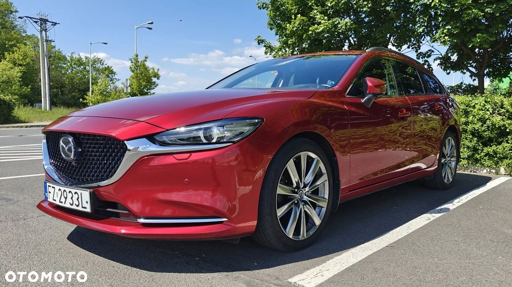
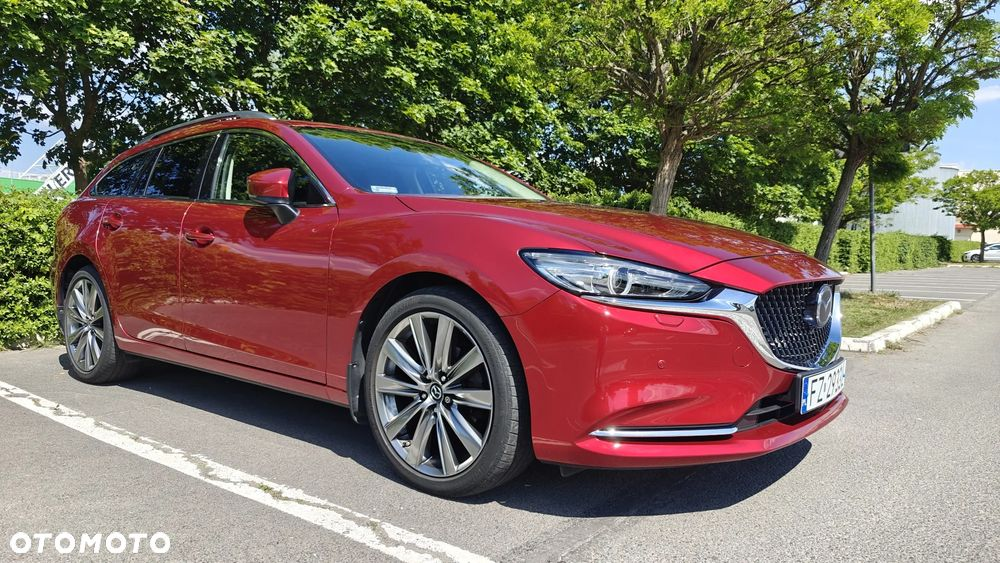
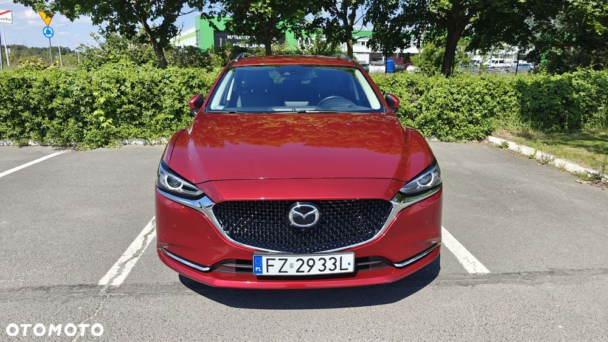
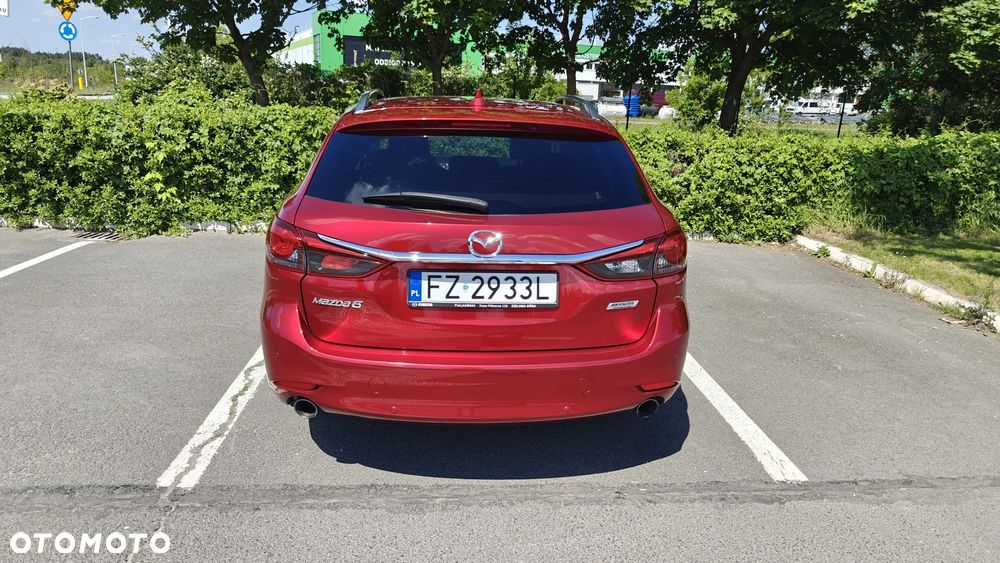
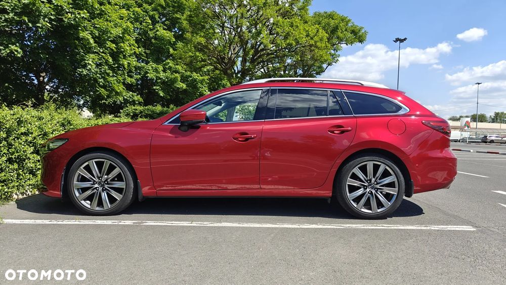
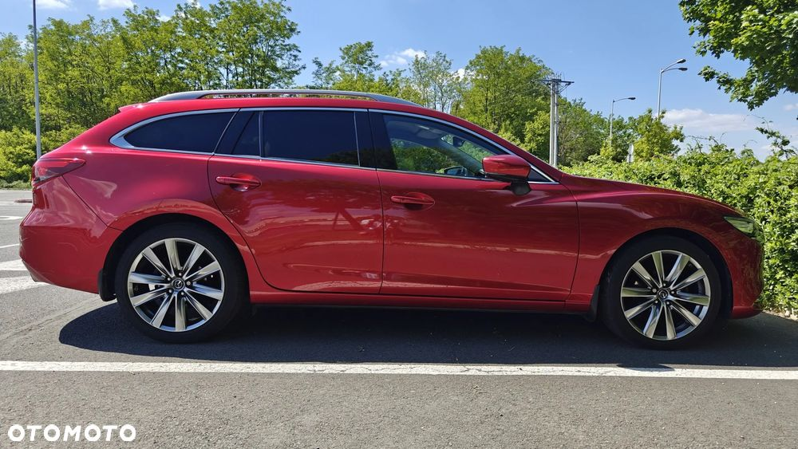
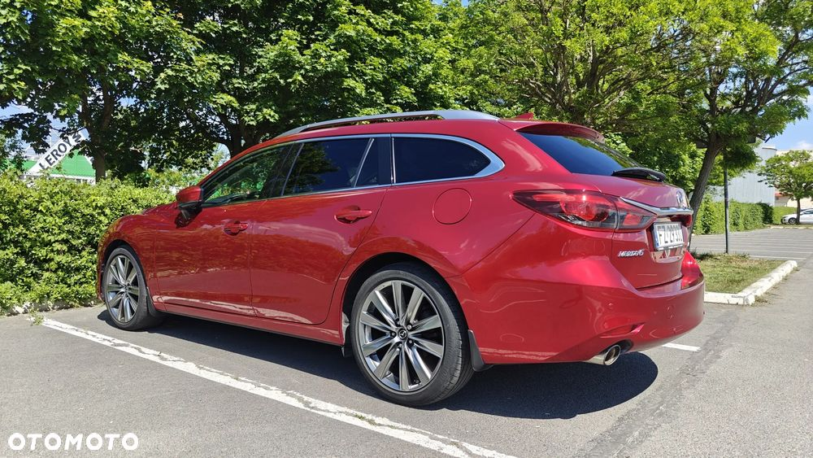
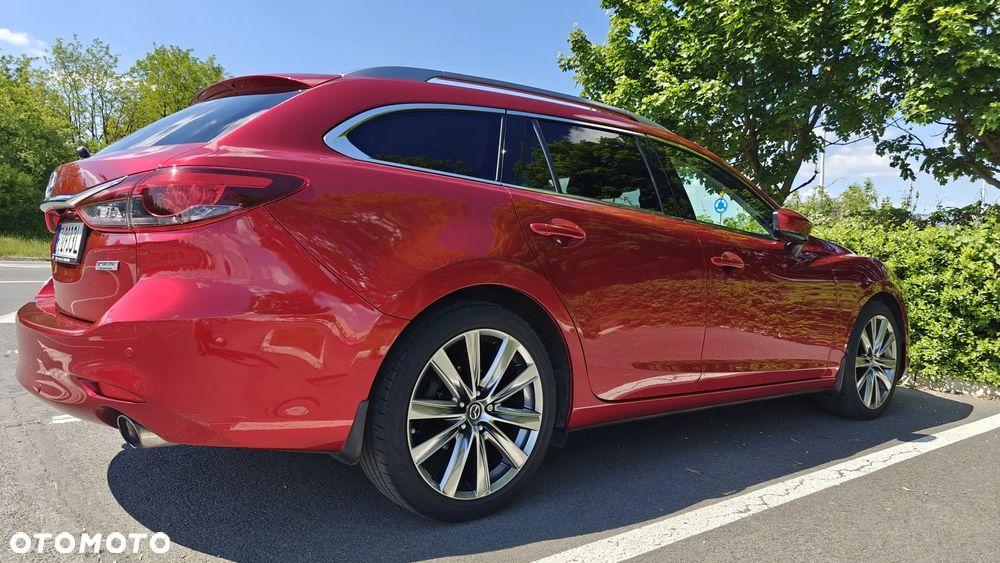
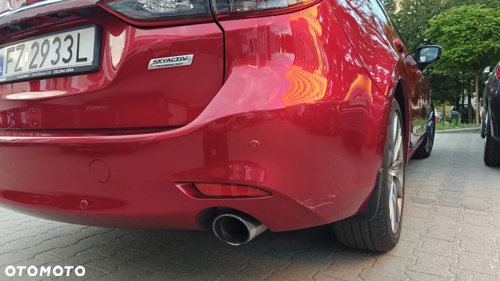
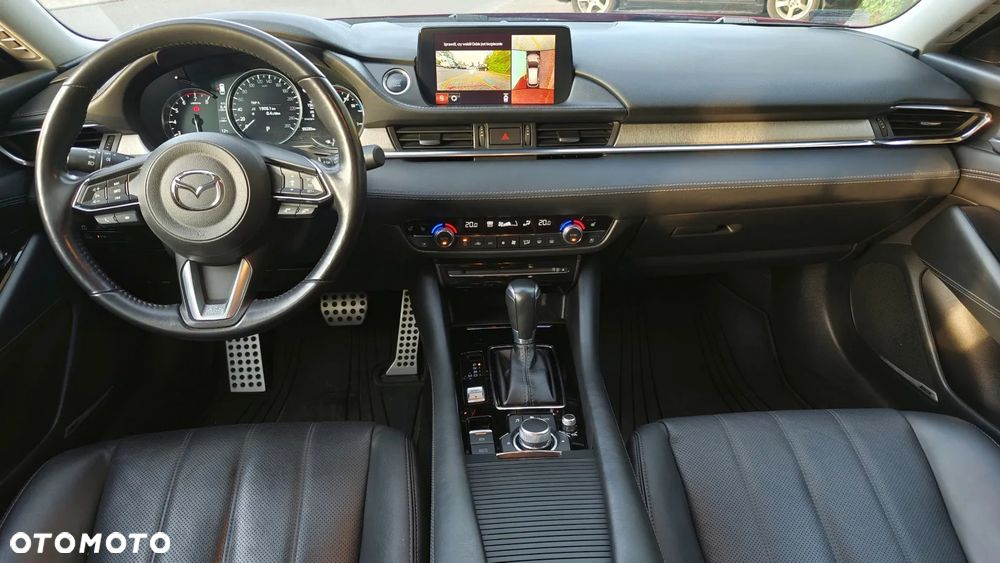
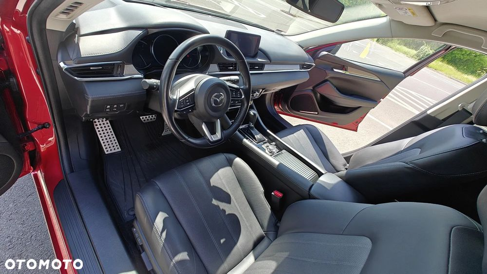
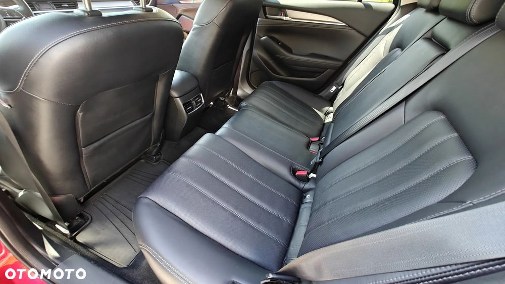
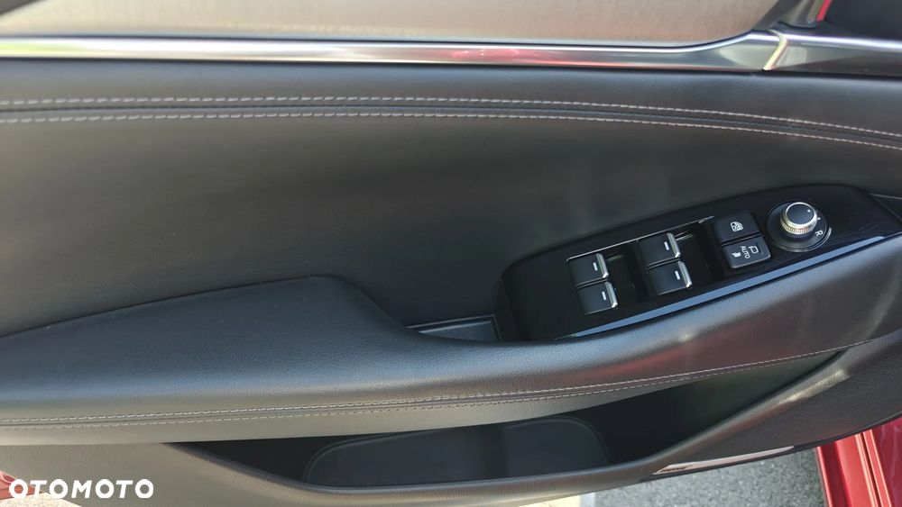
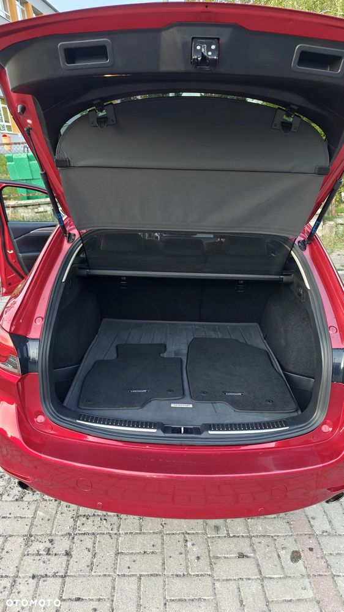
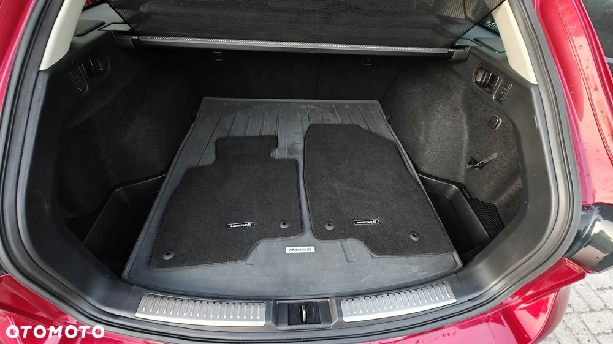
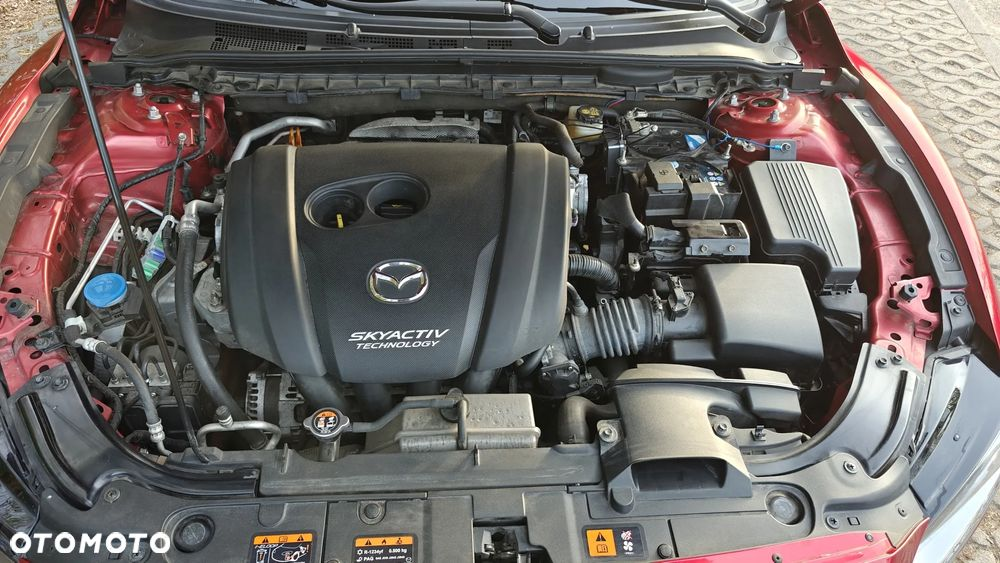